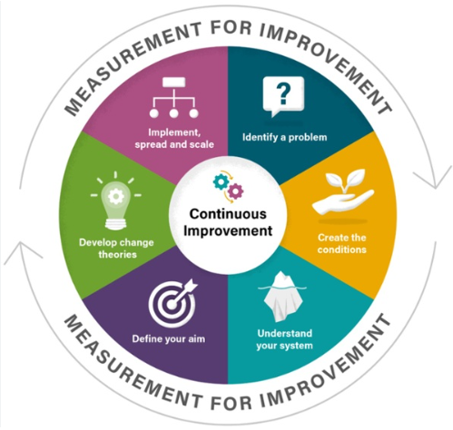

What is Quality Improvement?
Quality Improvement is a way for teams to look closely at how work happens and make practical changes that improve the care and experience of the people who use our services. It is not about one-off projects or adding more work; it is about testing small, thoughtful improvements, learning from what happens, and building successful changes into everyday practice.
Learning Half Days give teams protected time to pause their usual work, share what they notice, and plan changes together. By starting small, using evidence, and listening to colleagues and service users, teams can test ideas safely and share learning across the Trust.
Continuous Growth
Use these resources to identify efficiencies, improve patient outcomes, and share your team’s success stories across the Trust.

Model of Improvement
Quality Improvement (QI) is a structured approach to making continuous, positive changes across health and care services. Teams can use their Learning Half Day time to test ideas, solve everyday challenges, and measure impact.
The 3 Fundamental QI Questions
- Aim: What are we trying to accomplish?
- Measures: How will we know that a change is an improvement?
- Ideas: What changes can we make that will result in improvement?
The PDSA Cycle
- Plan
- Identify the change and plan data collection.
- Do
- Carry out the small-scale test and record findings.
- Study
- Analyze results against your predicted aim.
- Act
- Decide whether to adopt, adapt, or abandon the change.
What Improvement Actually Is
- Everyone has ideas and can make meaningful improvements.
- Start small, test ideas out, and do what is manageable.
- An opportunity to learn, experiment, and share learning across teams.
Quality Improvement learning and projects
Loading Quality Improvement items…